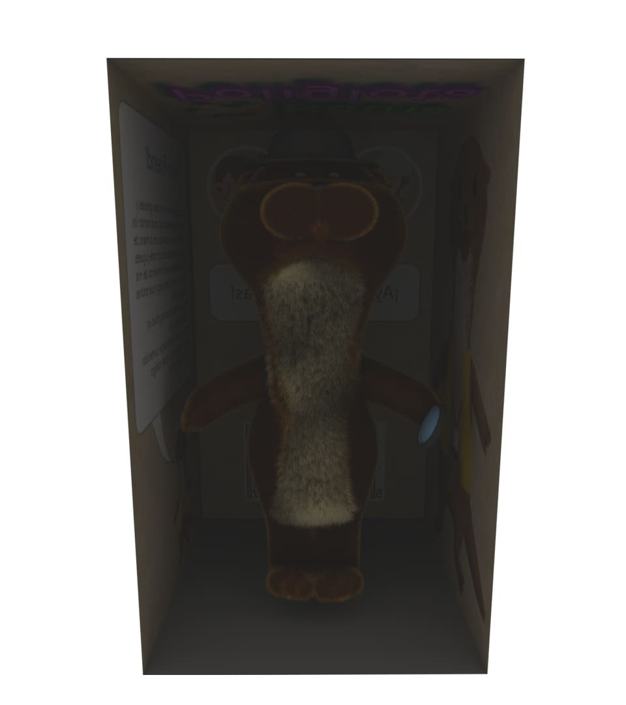
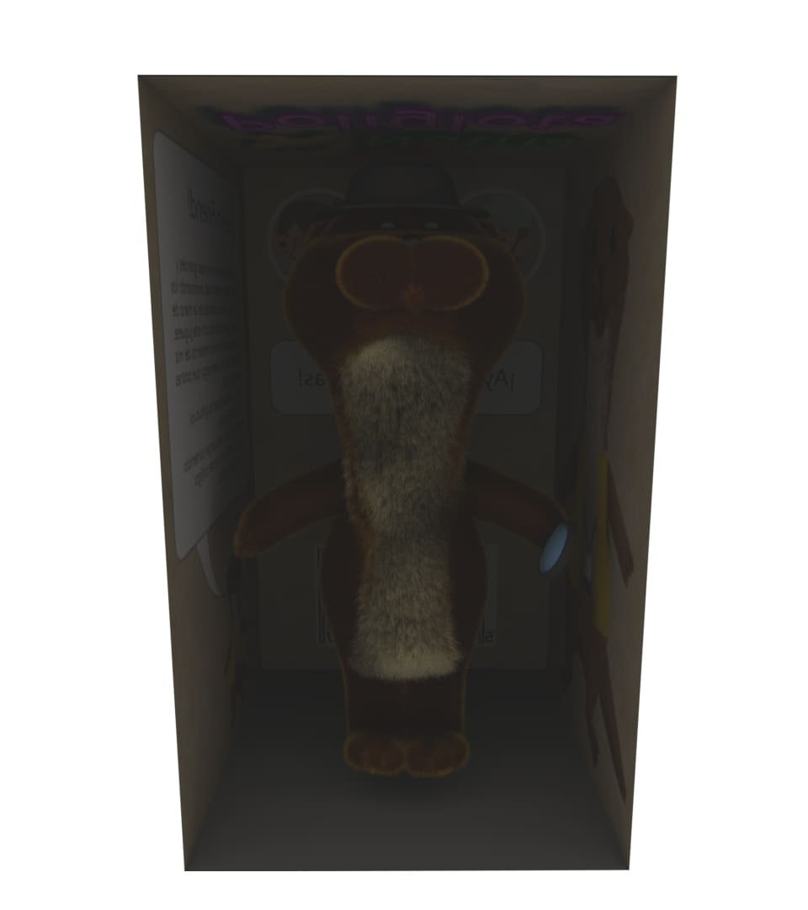

Nutria
Se requirió realizar el modelo de un posible juguete de una nutria propia de una serie ficticia. Para ello se uso "Autodesk Maya" para la realizacion del modelo y del pelaje. Para esto último, se uso xgen para la realizacion del pelaje, que junto al motor de render "maya", dio los siguientes resultados:


Y estos seria el juguete dentro de su empaque:
 
